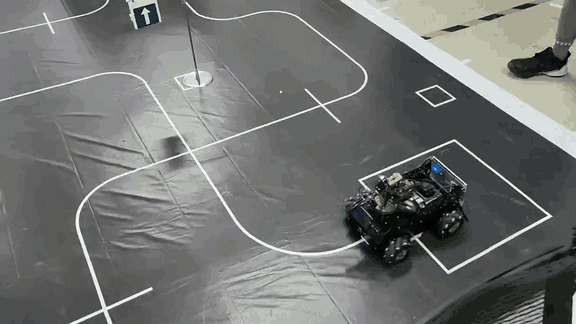
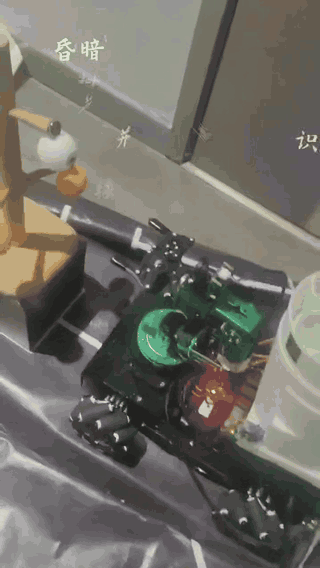

RAICOM Robot Developer Competition
This robot competed in the Smart Orchard event at the 2023 RAICOM Robot Developer Competition, where the team earned Second Prize at the national finals.
View project and source code on GitHubLine Following and Route Navigation
The robot leaves the start box and follows the marked course through curves and intersections toward the orchard stations.

Fruit Picking and Transfer
A close-up shows the arm approaching the fruit props, closing the gripper, lifting the target and transferring it to the onboard storage area.
